Next: Cluster Purification Algorithms Up: Speaker Clusters Description and Previous: Automatic Selection of the Contents
In this section a small change to the cluster models is proposed which leads to the elimination of the dependency of the acoustic models on the average speaker turn length. This is achieved by modifying the acoustic modeling topology by changing the probabilities of self-loop and transition in the last state. By doing so, a minimum duration for a speaker turn can be implemented like in the past while not influencing the final duration of a speaker turn. While setting a minimum duration for speaker turns is advantageous for the processing of the recordings and can be set to be independent of the kind of recording encountered, the average speaker turn duration is quite variable between individual recordings and domains. It is therefore better to let the acoustic data alone define when the speaker turn finishes once it achieves a minimum length.
In the cluster models each state contains a set of  sub-states, as seen in figure 4.7, imposing a minimum
duration of each model. Each one of the sub-states has a
probability density function modeled via a Gaussian mixture model
(GMM). The same GMM model is tied to all sub-states in any given
state. Upon entering a state, at time
sub-states, as seen in figure 4.7, imposing a minimum
duration of each model. Each one of the sub-states has a
probability density function modeled via a Gaussian mixture model
(GMM). The same GMM model is tied to all sub-states in any given
state. Upon entering a state, at time  the model forces a jump
to the following sub-state with probability 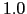 until the last
sub-state is reached. In that sub-state, it can remain in the same
sub-state with transition weight
the model forces a jump
to the following sub-state with probability 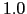 until the last
sub-state is reached. In that sub-state, it can remain in the same
sub-state with transition weight  , or jump to the first
sub-state of another state with weight
, or jump to the first
sub-state of another state with weight  , where
, where  is the
number of active states/clusters at that time. In the baseline
system these were set to
is the
number of active states/clusters at that time. In the baseline
system these were set to
 and
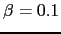 (summing
to 1).
and
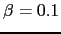 (summing
to 1).
One disadvantage of using these settings is that it creates an
implicit duration model on the data beyond the minimum duration
 , set as a parameter. Let us consider a sequence of N feature
vectors X={x[1] ...x[N]}. Let us also consider a set of K
cluster models
, set as a parameter. Let us consider a sequence of N feature
vectors X={x[1] ...x[N]}. Let us also consider a set of K
cluster models
 }. The
system imposes an equal probability to choose either cluster once
it outputs a prior cluster and has a minimum duration
}. The
system imposes an equal probability to choose either cluster once
it outputs a prior cluster and has a minimum duration  inside
either cluster.
inside
either cluster.
In order to study the interaction between  ,
,  and
and
 parameters, the likelihood of the data given the models is
analyzed. In equation 4.11 the likelihood is written
when the system selects model 1 as the initial model and stays in
it for the whole N acoustic frames, therefore creating 0 model
changes as
parameters, the likelihood of the data given the models is
analyzed. In equation 4.11 the likelihood is written
when the system selects model 1 as the initial model and stays in
it for the whole N acoustic frames, therefore creating 0 model
changes as
In equation 4.12 the likelihood is computed for the
case when one cluster change occurs within the decoded N frames.
The decoding used imposes that the second model will contain at
least  acoustic frames. Considering models 1 and 2 it can be
written as:
acoustic frames. Considering models 1 and 2 it can be
written as:
where 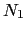 indicates a random point in the  frames, as long as 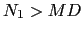 and
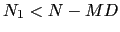.
frames, as long as 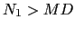 and
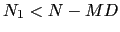.
The transition probabilities from these equations are the terms not affected by the acoustic models. By extending the number of changes to C, the transition probability can be proven that takes the expression:
It is composed of two parts. On one hand, the left side depends on
the  parameter and depends exclusively on the number of
cluster changes and the number of possible clusters to go to. On
the other hand, the right side is dependent on the
parameter and depends exclusively on the number of
cluster changes and the number of possible clusters to go to. On
the other hand, the right side is dependent on the  parameter and encodes the duration modeling of each of the
acoustic models. This duration model depends on the number of
speaker changes 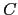 and the minimum duration
parameter and encodes the duration modeling of each of the
acoustic models. This duration model depends on the number of
speaker changes 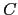 and the minimum duration  .
.
On the broadcast news system the parameters were set as
 , and
, and  seconds. This led to a
transition probability which is dependent on and
seconds. This led to a
transition probability which is dependent on and  , which
for many cases created segments that in average were very close to
duration
, which
for many cases created segments that in average were very close to
duration  . This was because on most cases when evaluating on N
frames of data,
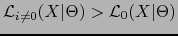. In order to avoid cluster changes
every
. This was because on most cases when evaluating on N
frames of data,
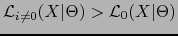. In order to avoid cluster changes
every  seconds a lower boundary for
seconds a lower boundary for  must be set by
ensuring that
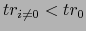 computed for a hypothetic case
when all models are the same (i.e.
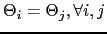). Applying this condition to the transition
probabilities for all possible values gives:
must be set by
ensuring that
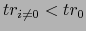 computed for a hypothetic case
when all models are the same (i.e.
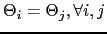). Applying this condition to the transition
probabilities for all possible values gives:
In order to remove the dependency of the  on duration
modeling, and agreeing with equation 4.14, the
parameters were set as
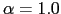 and
on duration
modeling, and agreeing with equation 4.14, the
parameters were set as
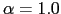 and  . Thus, once a
segment exceeds the minimum duration, the HMM state transitions no
longer influence the speaker turn length; it is solely governed by
acoustics. This creates a non-standard (but valid) HMM topology as
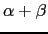 no longer sums to 1.
. Thus, once a
segment exceeds the minimum duration, the HMM state transitions no
longer influence the speaker turn length; it is solely governed by
acoustics. This creates a non-standard (but valid) HMM topology as
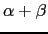 no longer sums to 1.